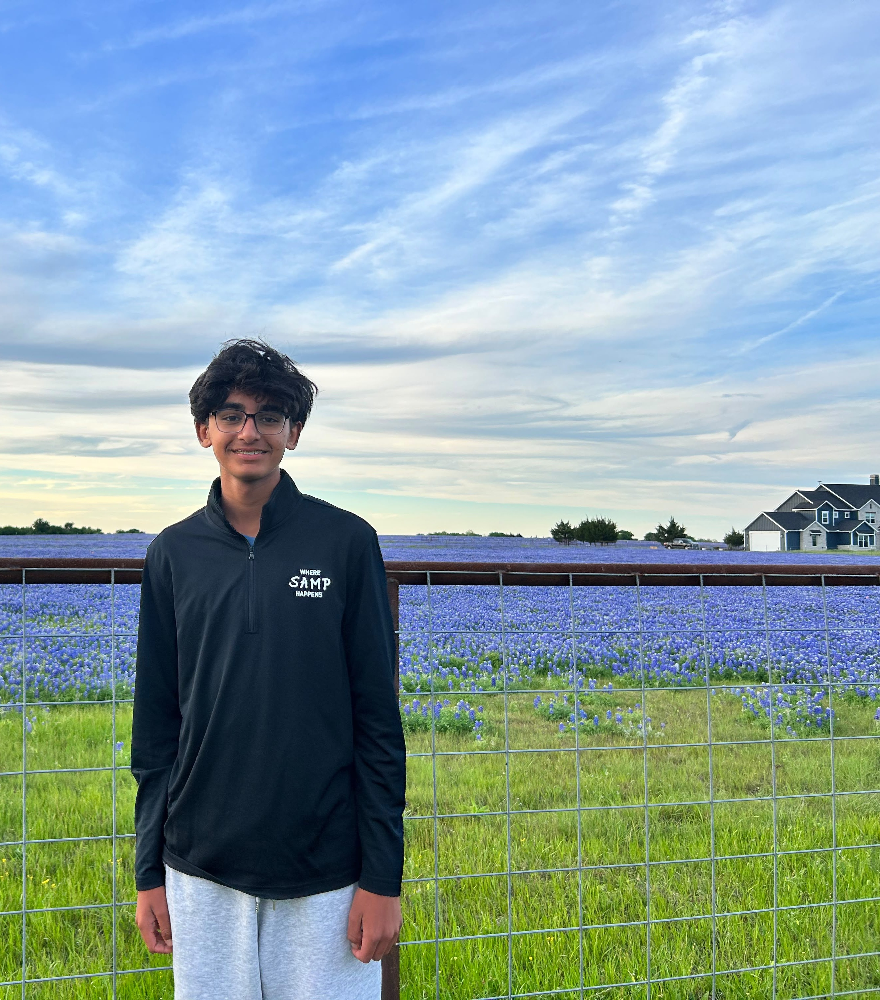
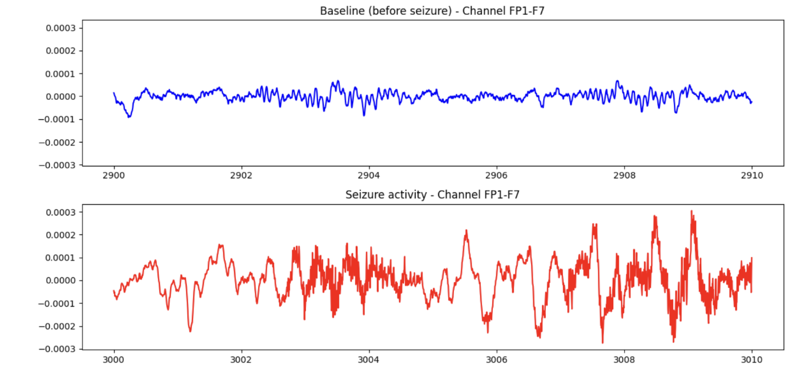
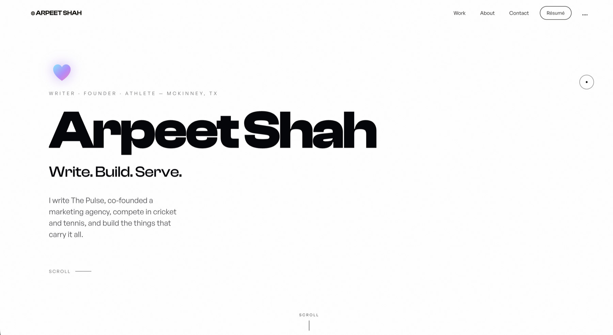

Researcher. Writer. Builder.
I'm Arpeet — a high school senior in McKinney, Texas, building toward a career in medicine. Right now that means independent research testing whether a computer can detect and eventually predict epileptic seizures from raw EEG data for the AAN Neuroscience Research Prize, and writing The Pulse, a weekly publication that turns real health research into something a teenager will actually read.
Outside of that, I tutor, build websites, compete in cricket and tennis, and every Saturday I teach, serve, and lead programming at my mandir. Different rooms, same instinct: take something complicated, and make it genuinely useful to someone else.
Seizure Detection
Can a computer detect, and eventually anticipate, an epileptic seizure from raw electroencephalographic activity alone?
Epilepsy affects approximately 50 million people worldwide, and diagnosis still depends on trained specialists manually reviewing EEG recordings, a process that is slow, expensive, and not universally accessible. This research investigates whether quantitative signal features can approximate that manual review.
The dataset is the CHB-MIT Scalp EEG Database, clinically collected pediatric epilepsy recordings from Boston Children's Hospital, distributed through PhysioNet. Each hour-long recording spans 23 electrode channels sampled at 256 Hz and is labeled by clinicians with exact seizure onset and offset times.
The primary metric is variance, a measure of how sharply a signal fluctuates within a fixed time window. Across 1,799 two-second windows, seizure activity averaged approximately nine times the variance of baseline activity. A second, independent seizure from the same patient replicated the finding at 8.3 times baseline.
- For
- AAN Neuroscience Research Prize
- Data
- CHB-MIT Scalp EEG · PhysioNet
- Method
- Python · MNE · variance → ML
- Finding
- Seizure variance ~9× baseline
- Validated
- 2 independent seizures
- Status
- Phase 1 — in progress

Every lesson funds a cause.
I mainly tutor math, from students learning it the standard way to students on the autism spectrum who need it taught differently. My range spans from 6th grade math all the way through AP Precalculus, and I also teach biology and Spanish.
But here's what matters most: I don't keep the money. Every dollar I earn goes straight to a cause that helps the community.
- Subjects
- Math (6th grade → AP Precalc) · Biology · Spanish
- Who
- All learners, including students on the spectrum
- Proceeds
- 100% to a community cause
Code & Craft
When the tool I need doesn't exist, I build it — sites, shaders, experiments.
I built The Pulse's site from scratch, and this portfolio too — WebGL, custom GLSL shaders, and scroll-driven motion. Beyond my own projects, I've built and sold websites for other people, earning over $1,000 doing it.
Code is the through-line for everything else here. I'm mostly self-taught, which means I learn by shipping something slightly harder than the last thing.
See the code on GitHub →- Stack
- JS · Three.js · Python
- Focus
- Creative dev
- Earned
- $1,000+ building sites for others

Capabilities
A researcher's toolkit, a writer's instinct, and a builder's hands.
On the research side I work in Python with MNE for EEG signal processing, plus NumPy and scikit-learn. On the build side: JavaScript, Three.js, GLSL. I design in Figma and keep everything organized in Notion.
The real skill under all of them is the same: taking something genuinely complex and making it clear.
- Research
- Python · MNE · scikit-learn
- Build
- JavaScript · Three.js · GLSL
- Design
- Figma · Notion
- Core
- Writing · research · explaining